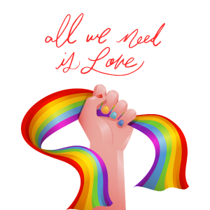

Entenda mais!
Muitas vezes, a sexualidade é tratada como um assunto "escandaloso" ou um tabu, mas a realidade é muito mais simples: ela é uma característica natural e intrínseca ao ser humano. A forma como amamos e sentimos atração faz parte da nossa identidade e nos acompanha em nossa jornada pelo mundo, influenciando como nos relacionamos com o próximo e com nós mesmos.
Não é uma escolha!
Existe um mito persistente de que a orientação sexual seria uma "opção" ou uma "escolha de estilo de vida". No entanto, a ciência e a experiência humana mostram que a atração não é algo que decidimos racionalmente. Para a comunidade LGBTQIA+, a orientação sexual é uma descoberta de uma parte profunda e autêntica de quem já são desde que nasceram. Ninguém escolhe enfrentar preconceitos; as pessoas simplesmente buscam o direito de viver sua verdade com dignidade.
A sigla LGBTQIA+
A sigla pode parecer longa à primeira vista, mas cada letra é um universo de vivências que merece ser compreendido. O símbolo de + ao final é fundamental: ele indica que a diversidade humana é vasta e que existem outras identidades e orientações que vão além das letras iniciais.
Aqui estão os significados principais:
L (Lésbicas): Mulheres que sentem atração afetiva e sexual por outras mulheres.
G (Gays): Homens que sentem atração afetiva e sexual por outros homens.
B (Bissexuais): Pessoas que sentem atração por mais de um gênero (seja o seu próprio ou outros).
T (Transgêneros, Transexuais e Travestis): Refere-se à identidade de gênero. São pessoas que não se identificam com o gênero que lhes foi designado ao nascer.
Q (Queer): Um termo que abrange pessoas que não se encaixam nas normas tradicionais de gênero ou orientação e transitam entre elas.
I (Intersexo): Pessoas cujas características biológicas (como cromossomos ou genitais) não se encaixam nas definições típicas de "macho" ou "fêmea".
A (Assexuais): Pessoas que sentem pouca ou nenhuma atração sexual por outras pessoas.
O importante aqui: Mais do que decorar as letras, o objetivo é entender que por trás de cada sigla existe um ser humano em busca de respeito, segurança e o direito de ser quem é.